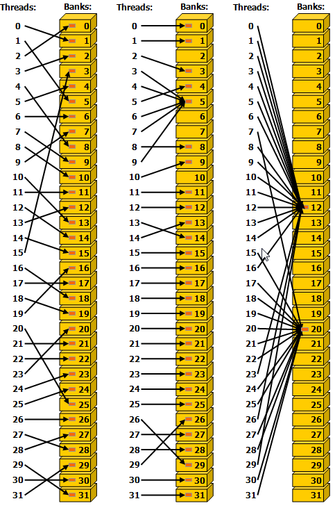
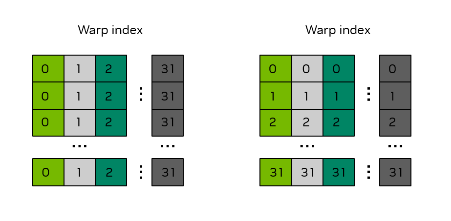

CUDA C++ 커널은 대체로 주어진 문제에 대해 기존 CPU 코드를 작성하는 것과 같은 방식으로 작성할 수 있습니다. 하지만 성능을 개선하는 데 사용할 수 있는 GPU의 몇 가지 고유한 기능이 있습니다. 또한 GPU에서 스레드가 어떻게 스케줄링되는지, 메모리에 어떻게 접근하는지, 그리고 실행이 어떻게 진행되는지를 어느 정도 이해하면 개발자가 사용 가능한 컴퓨팅 리소스의 활용도를 최대화하는 커널을 작성하는 데 도움이 될 수 있습니다.
2.2.1. SIMT의 기초#
개발자의 관점에서 CUDA 스레드는 병렬성의 기본 단위입니다. 워프와 SIMT에서는 GPU 실행의 기본 SIMT 모델을 설명하고, SIMT 실행 모델에서는 SIMT 모델의 추가 세부 정보를 제공합니다. SIMT 모델을 통해 각 스레드는 자체 상태와 제어 흐름을 유지할 수 있습니다. 기능적 관점에서 각 스레드는 별도의 코드 경로를 실행할 수 있습니다. 그러나 동일한 워프 내 스레드들이 분기된 코드 경로를 취하는 상황을 커널 코드가 최소화하도록 주의를 기울이면 상당한 성능 개선을 달성할 수 있습니다.
2.2.2. 스레드 계층 구조#
스레드는 스레드 블록으로 구성되며, 스레드 블록은 다시 그리드로 구성됩니다. 그리드는 1, 2 또는 3차원일 수 있으며, 그리드의 크기는 커널 내부에서 gridDim 빌트인 변수를 통해 조회할 수 있습니다. 스레드 블록 역시 1, 2 또는 3차원일 수 있습니다. 스레드 블록의 크기는 커널 내부에서 blockDim 빌트인 변수를 통해 조회할 수 있습니다. 스레드 블록의 인덱스는 blockIdx 빌트인 변수로 조회할 수 있습니다. 스레드 블록 내에서 스레드의 인덱스는 threadIdx 빌트인 변수를 사용해 얻습니다. 이러한 빌트인 변수는 각 스레드에 대해 고유한 전역 스레드 인덱스를 계산하는 데 사용되며, 이를 통해 각 스레드가 전역 메모리에서 특정 데이터를 로드/스토어하고 필요에 따라 고유한 코드 경로를 실행할 수 있게 됩니다.
gridDim.[x|y|z]:x,y,z차원에서 각각 그리드의 크기입니다. 이 값들은 커널 런치 시 설정됩니다.blockDim.[x|y|z]:x,y,z차원에서 각각 블록의 크기입니다. 이 값들은 커널 런치 시 설정됩니다.blockIdx.[x|y|z]:x,y,z차원에서 각각 블록의 인덱스입니다. 이 값들은 어떤 블록이 실행 중인지에 따라 변경됩니다.threadIdx.[x|y|z]:x,y,z차원에서 각각 스레드의 인덱스입니다. 이 값들은 어떤 스레드가 실행 중인지에 따라 변경됩니다.
다차원 스레드 블록과 그리드의 사용은 편의성을 위한 것일 뿐이며 성능에는 영향을 미치지 않습니다. 블록의 스레드는 예측 가능한 방식으로 선형화됩니다. 첫 번째 인덱스인 x이 가장 빠르게 변하고, 그다음 y, 그리고 z 순입니다. 이는 스레드 인덱스를 선형화했을 때, threadIdx.x의 연속 값이 연속 스레드를 나타내고, threadIdx.y의 스트라이드는 blockDim.x, threadIdx.z의 스트라이드는 blockDim.x * blockDim.y임을 의미합니다. 이는 하드웨어 멀티스레딩에서 자세히 설명하듯이 스레드가 워프에 할당되는 방식에 영향을 미칩니다.
그림 9는 1D 스레드 블록을 사용하는 2D 그리드의 간단한 예를 보여줍니다.

그림 9 스레드 블록 그리드#
2.2.3. GPU 디바이스 메모리 공간#
CUDA 디바이스에는 커널 내의 CUDA 스레드가 접근할 수 있는 여러 메모리 공간이 있습니다. 표 1은 일반적인 메모리 유형, 해당 스레드 범위, 그리고 수명의 요약을 보여줍니다. 다음 섹션에서는 이러한 각 메모리 유형을 더 자세히 설명합니다.
메모리 유형 |
범위 |
수명 |
위치 |
|---|---|---|---|
전역 |
그리드 |
애플리케이션 |
디바이스 |
상수 |
그리드 |
애플리케이션 |
디바이스 |
공유 |
블록 |
커널 |
SM |
로컬 |
스레드 |
커널 |
디바이스 |
레지스터 |
스레드 |
커널 |
SM |
2.2.3.1. 전역 메모리#
전역 메모리(디바이스 메모리라고도 함)는 커널의 모든 스레드가 접근할 수 있는 데이터를 저장하기 위한 기본 메모리 공간입니다. 이는 CPU 시스템의 RAM과 유사합니다. GPU에서 실행되는 커널은 CPU에서 실행되는 코드가 시스템 메모리에 접근하는 것과 같은 방식으로 전역 메모리에 직접 접근할 수 있습니다.
전역 메모리는 지속적(persistent)입니다. 즉, 전역 메모리에서 이루어진 할당과 그 안에 저장된 데이터는 해당 할당이 해제되거나 애플리케이션이 종료될 때까지 유지됩니다. cudaDeviceReset 또한 모든 할당을 해제합니다.
전역 메모리는 cudaMalloc 및 cudaMallocManaged 같은 CUDA API 호출로 할당됩니다. 데이터는 cudaMemcpy 같은 CUDA 런타임 API 호출을 사용하여 CPU 메모리에서 전역 메모리로 복사할 수 있습니다. CUDA API로 만들어진 전역 메모리 할당은 cudaFree를 사용하여 해제됩니다.
커널 런치 전에 전역 메모리는 CUDA API 호출로 할당 및 초기화됩니다. 커널 실행 중에는 CUDA 스레드가 전역 메모리에서 데이터를 읽을 수 있으며, CUDA 스레드가 수행한 연산의 결과를 전역 메모리에 다시 쓸 수 있습니다. 커널 실행이 완료되면, 전역 메모리에 기록된 결과를 호스트로 다시 복사하거나 GPU의 다른 커널에서 사용할 수 있습니다.
전역 메모리는 그리드의 모든 스레드가 접근할 수 있으므로, 스레드 간 데이터 레이스를 피하도록 주의해야 합니다. 호스트에서 런치된 CUDA 커널은 반환 타입이 void이므로, 커널이 계산한 수치 결과를 호스트로 반환하는 유일한 방법은 그 결과를 전역 메모리에 쓰는 것입니다.
전역 메모리 사용을 보여주는 간단한 예는 아래의 vecAdd 커널로, 여기서 세 배열 A, B, C은 전역 메모리에 있으며 이 벡터 더하기 커널이 이에 접근합니다.
__global__ void vecAdd(float* A, float* B, float* C, int vectorLength)
{
int workIndex = threadIdx.x + blockIdx.x*blockDim.x;
if(workIndex < vectorLength)
{
C[workIndex] = A[workIndex] + B[workIndex];
2.2.3.3. 레지스터#
레지스터는 SM에 위치하며 스레드 로컬 범위를 가집니다. 레지스터 사용은 컴파일러가 관리하며, 레지스터는 커널 실행 동안 스레드 로컬 저장소로 사용됩니다. SM당 레지스터 수와 스레드 블록당 레지스터 수는 다음을 사용하여 조회할 수 있습니다 regsPerMultiprocessor 및 regsPerBlock GPU의 디바이스 속성입니다.
NVCC는 개발자가 최대 레지스터 수를 지정할 수 있도록 합니다 커널에서 사용될 최대 레지스터 수를 다음을 통해 -maxrregcount 옵션입니다. 이 옵션을 사용해 커널이 사용할 수 있는 레지스터 수를 줄이면 SM에서 더 많은 스레드 블록이 동시에 스케줄링될 수 있지만, 레지스터 스필링이 더 많이 발생할 수도 있습니다.
2.2.3.4. 로컬 메모리#
로컬 메모리는 레지스터와 유사한 스레드 로컬 저장소이며 NVCC가 관리하지만, 로컬 메모리의 물리적 위치는 전역 메모리 공간에 있습니다. ‘로컬’이라는 레이블은 물리적 위치가 아니라 논리적 범위를 의미합니다. 로컬 메모리는 커널 실행 동안 스레드 로컬 저장소로 사용됩니다. 컴파일러가 로컬 메모리에 배치할 가능성이 높은 자동 변수는 다음과 같습니다:
상수 값으로 인덱싱된다는 것을 판단할 수 없는 배열은
레지스터 공간을 너무 많이 소비하게 되는 큰 구조체 또는 배열은
커널이 사용 가능한 레지스터보다 더 많은 레지스터를 사용할 경우, 어떤 변수든 레지스터 스필링이 발생합니다.
로컬 메모리 공간은 디바이스 메모리에 상주하므로, 로컬 메모리 접근은 전역 메모리 접근과 동일한 지연 시간과 대역폭을 가지며 병합된 전역 메모리 접근에 설명된 것과 동일한 메모리 병합(coalescing) 요구 사항이 적용됩니다. 그러나 로컬 메모리는 연속적인 32비트 워드가 연속적인 스레드 ID에 의해 접근되도록 구성되어 있습니다. 따라서 워프(warp) 내 모든 스레드가 배열 변수의 동일한 인덱스나 구조체 변수의 동일한 멤버와 같이 동일한 상대 주소에 접근하는 한, 접근은 완전히 병합됩니다.
2.2.3.5. 상수 메모리#
상수 메모리는 그리드 범위를 가지며 애플리케이션의 수명 동안 접근할 수 있습니다. 상수 메모리는 디바이스에 상주하며 커널에서 읽기 전용입니다. 따라서 어떤 함수 밖에서 __constant__ 지정자를 사용하여 호스트에서 선언하고 초기화해야 합니다.
__constant__ 메모리 공간 지정자는 다음과 같은 변수를 선언합니다:
상수 메모리 공간에 상주하며,
생성된 CUDA 컨텍스트의 수명을 가지며,
디바이스마다 고유한 객체를 가지며,
그리드 내의 모든 스레드에서, 그리고 런타임 라이브러리(
cudaGetSymbolAddress()/cudaGetSymbolSize()/cudaMemcpyToSymbol()/cudaMemcpyFromSymbol())를 통해 호스트에서 접근할 수 있습니다.
상수 메모리의 총량은 totalConstMem 디바이스 속성 요소로 조회할 수 있습니다.
상수 메모리는 각 스레드가 읽기 전용 방식으로 사용할 소량의 데이터에 유용합니다. 상수 메모리는 다른 메모리에 비해 작으며, 일반적으로 디바이스당 64KB입니다.
상수 메모리를 선언하고 사용하는 예시 스니펫은 다음과 같습니다.
// In your .cu file
__constant__ float coeffs[4];
__global__ void compute(float *out) {
int idx = threadIdx.x;
out[idx] = coeffs[0] * idx + coeffs[1];
}
// In your host code
float h_coeffs[4] = {1.0f, 2.0f, 3.0f, 4.0f};
cudaMemcpyToSymbol(coeffs, h_coeffs, sizeof(h_coeffs));
compute<<<1, 10>>>(device_out);
2.2.3.6. 캐시#
GPU 디바이스에는 L2 및 L1 캐시를 포함하는 다단계 캐시 구조가 있습니다.
L2 캐시는 디바이스에 위치하며 모든 SM 간에 공유됩니다. L2 캐시의 크기는 다음을 통해 조회할 수 있습니다 l2CacheSize 함수의 디바이스 속성 요소 cudaGetDeviceProperties.
위에서 설명한 바와 같이 공유 메모리, L1 캐시는 각 SM에 물리적으로 위치하며 공유 메모리가 사용하는 것과 동일한 물리적 공간을 사용합니다. 커널에서 공유 메모리를 사용하지 않는 경우, 전체 물리적 공간이 L1 캐시에 의해 사용됩니다.
L2 및 L1 캐시는 개발자가 다양한 캐싱 동작을 지정할 수 있도록 하는 함수를 통해 제어할 수 있습니다. 이러한 함수의 자세한 내용은 L1/공유 메모리 균형 구성, L2 캐시 제어, 및 저수준 로드 및 스토어 함수에서 확인할 수 있습니다.
이러한 힌트를 사용하지 않으면, 컴파일러와 런타임이 캐시를 효율적으로 활용하기 위해 최선을 다할 것입니다.
2.2.3.7. 텍스처 및 서피스 메모리#
참고
일부 오래된 CUDA 코드는 텍스처 메모리를 사용할 수 있는데, 이는 이전 NVIDIA GPU에서 일부 시나리오에서 성능 이점을 제공했기 때문입니다. 현재 지원되는 모든 GPU에서 이러한 시나리오는 직접 로드 및 스토어 명령을 사용하여 처리할 수 있으며, 텍스처 및 서피스 메모리 명령을 사용해도 더 이상 어떤 성능 이점도 제공되지 않습니다.
GPU에는 3D 렌더링에서 텍스처로 사용될 이미지로부터 데이터를 로드하기 위한 특수 명령이 있을 수 있습니다. CUDA는 이러한 명령과 이를 사용하기 위한 메커니즘을 텍스처 오브젝트 API 및 서피스 오브젝트 API로 제공합니다.
현재 지원되는 어떤 NVIDIA GPU에서도 CUDA에서 텍스처 및 서피스 메모리를 사용하는 데 이점이 없으므로, 이 가이드에서는 더 이상 다루지 않습니다. CUDA 개발자는 이러한 API를 자유롭게 무시해도 됩니다. 기존 코드베이스에서 여전히 이를 사용하고 있는 개발자의 경우, 이러한 API에 대한 설명은 레거시 CUDA C++ 프로그래밍 가이드에서 여전히 찾아볼 수 있습니다.
2.2.4. 메모리 성능#
적절한 메모리 사용을 보장하는 것은 CUDA 커널에서 높은 성능을 달성하는 데 핵심입니다. 이 절에서는 CUDA 커널에서 높은 메모리 처리량을 달성하기 위한 몇 가지 일반 원칙과 예제를 다룹니다.
2.2.4.1. 병합된 전역 메모리 접근#
전역 메모리는 32바이트 메모리 트랜잭션을 통해 접근됩니다. CUDA 스레드가 전역 메모리에서 데이터 워드 하나를 요청하면, 해당 워프(warp)는 그 워프 내 모든 스레드의 메모리 요청을, 각 스레드가 접근하는 워드의 크기와 스레드들에 걸친 메모리 주소 분포에 따라, 요청을 만족시키는 데 필요한 수의 메모리 트랜잭션으로 병합(coalesce)합니다. 예를 들어 스레드가 4바이트 워드를 요청하는 경우, 워프가 전역 메모리에 대해 생성하는 실제 메모리 트랜잭션은 총 32바이트가 됩니다. 메모리 시스템을 가장 효율적으로 사용하려면, 워프는 단일 메모리 트랜잭션에서 가져온 모든 메모리를 사용해야 합니다. 즉, 스레드가 전역 메모리에서 4바이트 워드를 요청하고 트랜잭션 크기가 32바이트일 때, 해당 워프의 다른 스레드들이 그 32바이트 요청에 포함된 다른 4바이트 데이터 워드를 사용할 수 있다면, 이는 메모리 시스템을 가장 효율적으로 사용하는 결과가 됩니다.
간단한 예로, 워프 내 연속된 스레드들이 메모리에서 연속된 4바이트 워드를 요청한다면, 워프는 총 128바이트의 메모리를 요청하게 되며, 필요한 이 128바이트는 32바이트 메모리 트랜잭션 4번으로 가져오게 됩니다. 이는 메모리 시스템 활용률 100%를 의미합니다. 즉, 메모리 트래픽의 100%가 워프에 의해 활용됩니다. 그림 10은 완벽하게 병합된 메모리 접근의 이 예를 보여줍니다.

그림 10 병합된 메모리 접근#
반대로, 병적으로 최악의 시나리오는 연속된 스레드가 메모리에서 서로 32바이트 이상 떨어진 데이터 요소에 접근하는 경우입니다. 이 경우 워프(warp)는 각 스레드마다 32바이트 메모리 트랜잭션을 발행해야 하며, 메모리 트래픽의 총 바이트 수는 32바이트 × 32 스레드/워프 = 1024바이트가 됩니다. 그러나 실제로 사용되는 메모리 양은 128바이트뿐입니다(워프의 각 스레드당 4바이트). 따라서 메모리 활용률은 128 / 1024 = 12.5%에 불과합니다. 이는 메모리 시스템을 매우 비효율적으로 사용하는 것입니다. 그림 11은 이러한 비병합(uncoalesced) 메모리 접근의 예를 보여줍니다.

그림 11 비병합된 메모리 접근#
병합된 메모리 접근을 달성하는 가장 간단한 방법은 연속된 스레드가 메모리의 연속된 요소에 접근하도록 하는 것입니다. 예를 들어 1차원 스레드 블록으로 런치된 커널의 경우, 다음 VecAdd 커널은 병합된 메모리 접근을 달성합니다. 스레드 workIndex가 세 개의 배열에 접근하는 방식을 보면, 연속된 스레드(즉, workIndex의 연속 값으로 표시됨)가 배열에서 연속된 요소에 접근하는 것을 알 수 있습니다.
__global__ void vecAdd(float* A, float* B, float* C, int vectorLength)
{
int workIndex = threadIdx.x + blockIdx.x*blockDim.x;
if(workIndex < vectorLength)
{
C[workIndex] = A[workIndex] + B[workIndex];
병합된 메모리 접근을 달성하기 위해 연속된 스레드가 메모리의 연속된 요소에 접근해야 하는 요구 사항은 없으며, 이는 단지 병합이 달성되는 일반적인 방식일 뿐입니다. 워프 내 모든 스레드가 어떤 선형적 또는 치환(permuted)된 방식으로 메모리의 동일한 32바이트 세그먼트에서 요소에 접근하기만 하면 병합된 메모리 접근이 발생합니다. 다른 말로 하면, 병합된 메모리 접근을 달성하는 가장 좋은 방법은 사용된 바이트 수 대비 전송된 바이트 수의 비율을 최대화하는 것입니다.
참고
전역 메모리 접근의 적절한 병합(coalescing)을 보장하는 것은 고성능 CUDA 커널을 작성하기 위한 가장 중요한 성능 고려 사항 중 하나입니다. 애플리케이션은 메모리 시스템을 가능한 한 효율적으로 사용하는 것이 필수적입니다.
2.2.4.1.1. 전역 메모리를 사용하는 행렬 전치 예제#
간단한 예로, 크기 N x N의 32비트 float 정사각 행렬을 행렬 a에서 행렬 c로 out-of-place 방식으로 전치하는 행렬 전치 커널을 고려해 봅시다. 이 예제는 2차원 그리드를 사용하며, 32 x 32 스레드 크기의 2차원 스레드 블록을 런치한다고 가정합니다. 즉, blockDim.x = 32 및 blockDim.y = 32이므로 각 2차원 스레드 블록은 행렬의 32 x 32 타일에서 동작합니다. 각 스레드는 행렬의 고유한 요소 하나에서 동작하므로 스레드의 명시적 동기화는 필요하지 않습니다. 그림 12는 이 행렬 전치 연산을 보여줍니다. 커널 소스 코드는 그림 뒤에 이어집니다.

그림 12 전역 메모리를 사용하는 행렬 전치#
각 행렬의 위쪽과 왼쪽에 있는 레이블은 2차원 스레드 블록 인덱스이며 타일 인덱스로도 볼 수 있는데, 여기서 각 작은 정사각형은 2차원 스레드 블록이 연산할 행렬의 타일을 나타냅니다. 이 예제에서 타일 크기는 32 x 32 요소이므로, 각 작은 정사각형은 행렬의 32 x 32 타일을 나타냅니다. 녹색 음영의 정사각형은 전치 연산 전과 후의 예시 타일 위치를 보여줍니다.
/* macro to index a 1D memory array with 2D indices in row-major order */
/* ld is the leading dimension, i.e. the number of columns in the matrix */
#define INDX( row, col, ld ) ( ( (row) * (ld) ) + (col) )
/* CUDA kernel for naive matrix transpose */
__global__ void naive_cuda_transpose(int m, float *a, float *c )
{
int myCol = blockDim.x * blockIdx.x + threadIdx.x;
int myRow = blockDim.y * blockIdx.y + threadIdx.y;
if( myRow < m && myCol < m )
{
c[INDX( myCol, myRow, m )] = a[INDX( myRow, myCol, m )];
} /* end if */
return;
} /* end naive_cuda_transpose */
이 커널이 병합된 메모리 접근을 달성하고 있는지 판단하려면, 연속된 스레드가 메모리의 연속된 요소에 접근하고 있는지 확인해야 합니다. 2차원 스레드 블록에서는 x 인덱스가 가장 빠르게 변하므로, threadIdx.x의 연속 값은 메모리의 연속된 요소에 접근해야 합니다. threadIdx.x는 myCol에 나타나며, myCol가 INDX 매크로의 두 번째 인수일 때 연속된 스레드가 a의 연속된 값을 읽고 있음을 관찰할 수 있으므로, a의 읽기는 완벽하게 병합됩니다.
그러나 c 의 쓰기는 병합되지 않는데, 이는 threadIdx.x (다시 살펴보면 myCol)는 다음에 요소를 쓰고 있습니다 c 인 ld (leading dimension) 요소만큼 서로 떨어져 있습니다. 이는 이제 myCol 가 다음의 첫 번째 인수이기 때문입니다 INDX 매크로의 첫 번째 인수이며, 또한 첫 번째 인수로 INDX 1씩 증가하므로 메모리 위치는 다음만큼 변경됩니다 ld. 때 ld 가 32보다 크면(행렬 크기가 32보다 클 때마다 발생), 이는 다음에 표시된 병적으로 최악의 경우와 동일합니다 그림 11.
이러한 비병합(uncoalesced) 쓰기를 완화하기 위해, 공유 메모리를 사용할 수 있으며 이에 대해서는 다음 섹션에서 설명합니다.
2.2.4.2. 공유 메모리 접근 패턴#
공유 메모리는 32개의 뱅크로 구성되며, 연속된 32비트 워드가 연속된 뱅크에 매핑되도록 조직되어 있습니다. 각 뱅크는 클록 사이클당 32비트의 대역폭을 가집니다.
같은 워프(warp) 내의 여러 스레드가 동일한 뱅크의 서로 다른 요소에 접근하려고 하면 뱅크 충돌(bank conflict)이 발생합니다. 이 경우, 해당 뱅크의 데이터에 대한 접근은 그 뱅크의 데이터가 이를 요청한 모든 스레드에 의해 획득될 때까지 직렬화됩니다. 이러한 접근의 직렬화는 성능 페널티를 초래합니다.
이 시나리오에 대한 두 가지 예외는 같은 워프(warp) 내의 여러 스레드가 동일한 공유 메모리 위치에 접근(읽기 또는 쓰기)하는 경우입니다. 읽기 접근의 경우, 워드는 요청한 스레드들에게 브로드캐스트됩니다. 쓰기 접근의 경우, 각 공유 메모리 주소는 스레드 중 하나에 의해서만 기록되며(어느 스레드가 쓰기를 수행하는지는 정의되지 않음),
그림 13은 스트라이드 접근의 몇 가지 예를 보여줍니다. 뱅크 내부의 빨간 상자는 공유 메모리에서의 고유한 위치를 나타냅니다.

그림 13 32비트 뱅크 크기 모드에서의 스트라이드 공유 메모리 접근.#
- 왼쪽
32비트 워드 1개 스트라이드의 선형 주소 지정(뱅크 충돌 없음).
- 가운데
32비트 워드 2개 스트라이드의 선형 주소 지정(2-way 뱅크 충돌).
- 오른쪽
32비트 워드 3개 스트라이드의 선형 주소 지정(뱅크 충돌 없음).
그림 14는 브로드캐스트 메커니즘이 포함된 메모리 읽기 접근의 몇 가지 예를 보여줍니다. 뱅크 내부의 빨간 상자는 공유 메모리 내의 고유한 위치를 나타냅니다. 여러 화살표가 같은 위치를 가리키면, 데이터는 이를 요청한 모든 스레드로 브로드캐스트됩니다.

Figure 14 불규칙 공유 메모리 접근.#
- 왼쪽
무작위 치환(permutation)을 통한 충돌 없는 접근.
- 가운데
스레드 3, 4, 6, 7, 9가 뱅크 5 내에서 같은 워드에 접근하므로 충돌 없는 접근.
- 오른쪽
충돌 없는 브로드캐스트 접근(스레드들이 한 뱅크 내에서 같은 워드에 접근).
참고
뱅크 충돌을 피하는 것은 공유 메모리를 사용하는 고성능 CUDA 커널을 작성할 때 중요한 성능 고려사항입니다.
2.2.4.2.2. 공유 메모리 뱅크 충돌(bank conflict)#
섹션 2.2.4.2에서 공유 메모리의 뱅크 구조를 설명했습니다. 이전 행렬 전치 예제에서는 전역 메모리로부터/전역 메모리로의 적절한 병합된 메모리 접근을 달성했지만, 공유 메모리 뱅크 충돌이 존재하는지 여부는 고려하지 않았습니다. 다음 2차원 공유 메모리 선언을 고려해 봅시다.
__shared__ float smemArray[32][32];
워프(warp)는 32개 스레드이므로, 같은 워프에 있는 각 스레드는 threadIdx.y에 대해 고정된 값을 가지며 0 <= threadIdx.x < 32를 가지게 됩니다.
그림 15의 왼쪽 패널은 워프 내 스레드들이 smemArray의 한 열(column)에 있는 데이터에 접근할 때의 상황을 보여줍니다. 워프 0은 메모리 위치 smemArray[0][0]부터 smemArray[31][0]까지에 접근하고 있습니다. C++ 다차원 배열 순서에서는 마지막 인덱스가 가장 빠르게 변하므로, 워프 0의 연속된 스레드들은 32개 요소 간격으로 떨어진 메모리 위치들에 접근하게 됩니다. 그림에 나타난 것처럼 색은 뱅크를 나타내며, 워프 0이 전체 열을 따라 접근하면 32-way 뱅크 충돌이 발생합니다.
그림 15의 오른쪽 패널은 워프 내 스레드들이 smemArray의 한 행(row)을 가로질러 데이터에 접근할 때의 상황을 보여줍니다. 워프 0은 메모리 위치 smemArray[0][0]부터 smemArray[0][31]까지에 접근하고 있습니다. 이 경우 워프 0의 연속된 스레드들은 서로 인접한 메모리 위치들에 접근합니다. 그림에 나타난 것처럼 색은 뱅크를 나타내며, 워프 0이 전체 행을 가로질러 접근하면 뱅크 충돌이 발생하지 않습니다. 이상적인 시나리오는 워프 내 각 스레드가 서로 다른 색의 공유 메모리 위치에 접근하는 것입니다.

그림 15 32 x 32 공유 메모리 배열의 뱅크 구조.#
상자 안의 숫자는 워프 인덱스를 나타냅니다. 색은 해당 공유 메모리 위치와 연관된 뱅크가 무엇인지를 나타냅니다.
섹션 2.2.4.2.1의 예제로 돌아가면, 공유 메모리의 사용을 살펴 뱅크 충돌이 존재하는지 여부를 판단할 수 있습니다. 공유 메모리를 처음 사용하는 경우는 전역 메모리의 데이터를 공유 메모리에 저장할 때입니다:
smemArray[threadIdx.x][threadIdx.y] = a[INDX( tileRow + threadIdx.y, tileCol + threadIdx.x, m )];
C++ 배열은 행 우선(row-major) 순서로 저장되므로, threadIdx.x의 연속된 값으로 표시되듯이 같은 워프(warp) 내의 연속된 스레드들은 32개 요소 스트라이드로 smemArray에 접근하게 되는데, 이는 threadIdx.x가 배열에 대한 첫 번째 인덱스이기 때문입니다. 이로 인해 32-way 뱅크 충돌(bank conflict)이 발생하며, 이는 그림 15의 왼쪽 패널에 나타나 있습니다.
공유 메모리의 두 번째 사용은 공유 메모리의 데이터를 다시 전역 메모리에 기록할 때입니다:
c[INDX( tileCol + threadIdx.y, tileRow + threadIdx.x, m )] = smemArray[threadIdx.y][threadIdx.x];
이 경우 threadIdx.x는 smemArray 배열에 대한 두 번째 인덱스이므로, 같은 워프(warp) 내의 연속된 스레드들은 1개 요소 스트라이드로 smemArray에 접근하게 됩니다. 이는 뱅크 충돌(bank conflict)이 발생하지 않으며, 그림 15의 오른쪽 패널에 나타나 있습니다.
섹션 2.2.4.2.1에 설명된 행렬 전치 커널에는 뱅크 충돌이 없는 공유 메모리 접근 1개와 32-way 뱅크 충돌이 있는 접근 1개가 있습니다. 뱅크 충돌을 피하기 위한 일반적인 수정 방법은 다음과 같이 배열의 열 차원에 1을 더해 공유 메모리를 패딩하는 것입니다:
__shared__ float smemArray[THREADS_PER_BLOCK_X][THREADS_PER_BLOCK_Y+1];
smemArray 선언에 대한 이 작은 조정은 뱅크 충돌(bank conflict)을 제거합니다. 이를 설명하기 위해, 공유 메모리 배열이 32 x 33 크기로 선언된 그림 16을 고려해 보겠습니다. 같은 워프(warp) 내의 스레드들이 공유 메모리 배열의 전체 열(column) 방향으로 접근하든 전체 행(row) 방향으로 가로질러 접근하든, 뱅크 충돌이 제거되었음을 관찰할 수 있습니다. 즉, 같은 워프 내의 스레드들이 서로 다른 색상의 위치에 접근합니다.

Figure 16 32 x 33 공유 메모리 배열의 뱅크 구조.#
상자 안의 숫자는 워프 인덱스를 나타냅니다. 색상은 해당 공유 메모리 위치와 연관된 뱅크를 나타냅니다.
2.2.5. 원자 연산(Atomics)#
고성능 CUDA 커널은 가능한 한 많은 알고리즘적 병렬성을 표현하는 데 의존합니다. GPU 커널 실행의 비동기적 특성 때문에 스레드는 가능한 한 독립적으로 동작해야 합니다. 스레드의 완전한 독립성을 항상 확보할 수는 없으며, 공유 메모리에서 보았듯이 같은 스레드 블록 내의 스레드들이 데이터를 교환하고 동기화할 수 있는 메커니즘이 존재합니다.
전체 그리드 수준에서는 그리드의 모든 스레드를 동기화하는 그러한 메커니즘이 없습니다. 하지만 원자 함수를 사용하여 전역 메모리 위치에 대한 동기적 접근을 제공하는 메커니즘은 존재합니다. 원자 함수는 스레드가 전역 메모리 위치에 락을 획득한 뒤 해당 위치에서 읽기-수정-쓰기 연산을 수행할 수 있게 합니다. 락이 유지되는 동안에는 다른 어떤 스레드도 같은 위치에 접근할 수 없습니다. CUDA는 cuda::std::atomic 및 cuda::std::atomic_ref에 있는 것처럼 C++ 표준 라이브러리 원자 연산과 동일한 동작을 하는 원자 연산을 제공합니다. 또한 CUDA는 확장된 C++ 원자 연산 cuda::atomic 및 cuda::atomic_ref도 제공하며, 이는 사용자가 원자 연산의 스레드 스코프를 지정할 수 있게 해줍니다. 원자 함수의 자세한 내용은 원자 함수에서 다룹니다.
디바이스 전체에 대한 원자 덧셈을 수행하기 위해 cuda::atomic_ref를 사용하는 예는 다음과 같습니다. 여기서 array는 float 배열이고, result는 전역 메모리의 한 위치를 가리키는 float 포인터로, 배열의 합이 저장될 위치입니다.
__global__ void sumReduction(int n, float *array, float *result) {
...
tid = threadIdx.x + blockIdx.x * blockDim.x;
cuda::atomic_ref<float, cuda::thread_scope_device> result_ref(result);
result_ref.fetch_add(array[tid]);
...
}
원자 함수는 성능에 영향을 줄 수 있는 스레드 동기화를 강제하므로, 필요한 경우에만 제한적으로 사용해야 합니다.
2.2.6. 코오퍼러티브 그룹(Cooperative Groups)#
코오퍼러티브 그룹(Cooperative Groups)은 CUDA C++에서 사용할 수 있는 소프트웨어 도구로, 애플리케이션이 서로 동기화할 수 있는 스레드 그룹을 정의할 수 있게 하며, 그 스레드 그룹이 여러 스레드 블록, 단일 GPU 상의 여러 그리드, 또는 여러 GPU에 걸쳐 있더라도 가능합니다. CUDA 프로그래밍 모델은 일반적으로 스레드 블록 또는 스레드 블록 클러스터 내의 스레드들이 효율적으로 동기화하는 것을 허용하지만, 스레드 블록이나 클러스터보다 더 작은 스레드 그룹을 지정하는 메커니즘은 제공하지 않습니다. 마찬가지로, CUDA 프로그래밍 모델은 스레드 블록 간 동기화를 가능하게 하는 메커니즘이나 보장을 제공하지 않습니다.
코오퍼러티브 그룹은 소프트웨어를 통해 이 두 가지 기능을 모두 제공합니다. 코오퍼러티브 그룹은 애플리케이션이 스레드 블록과 클러스터의 경계를 넘나드는 스레드 그룹을 생성할 수 있게 하지만, 그렇게 하는 데에는 일부 의미론적 제한과 성능상의 영향이 따르며, 이는 코오퍼러티브 그룹을 다루는 기능 섹션에 자세히 설명되어 있습니다.
2.2.7. 커널 런치와 점유율(Occupancy)#
CUDA 커널이 런치되면, 커널 런치 시 지정된 실행 구성에 따라 CUDA 스레드들이 스레드 블록과 그리드로 그룹화됩니다. 커널이 런치되면 스케줄러는 스레드 블록을 SM에 할당합니다. 어떤 스레드 블록이 어떤 SM에서 실행되도록 스케줄되는지에 대한 상세는 애플리케이션이 제어하거나 질의할 수 없으며, 스케줄러는 순서 보장도 제공하지 않으므로, 프로그램은 올바른 실행을 위해 특정 스케줄링 순서나 방식에 의존할 수 없습니다.
SM에서 스케줄될 수 있는 블록 수는 특정 스레드 블록이 필요로 하는 하드웨어 자원과 SM에서 사용 가능한 하드웨어 자원에 따라 달라집니다. 커널이 처음 런치되면 스케줄러는 스레드 블록을 SM에 할당하기 시작합니다. 다른 스레드 블록에 의해 점유되지 않은 하드웨어 자원이 충분히 남아 있는 한, 스케줄러는 계속해서 스레드 블록을 SM에 할당합니다. 어느 시점에 어떤 SM도 추가 스레드 블록을 받아들일 수 있는 용량이 없게 되면, 스케줄러는 SM들이 이전에 할당된 스레드 블록을 완료할 때까지 기다립니다. 이렇게 되면 SM은 더 많은 작업을 받아들일 수 있게 되고, 스케줄러는 스레드 블록을 그들에게 할당합니다. 이 과정은 모든 스레드 블록이 스케줄되고 실행될 때까지 계속됩니다.
cudaGetDeviceProperties 함수는 디바이스 속성을 통해 각 SM의 한계를 애플리케이션이 질의할 수 있게 해줍니다. SM별 한계와 스레드 블록별 한계가 모두 존재한다는 점에 유의하십시오.
maxBlocksPerMultiProcessor: SM당 상주(resident) 블록의 최대 개수.sharedMemPerMultiprocessor: 바이트 단위로 SM당 사용 가능한 공유 메모리의 양.regsPerMultiprocessor: SM당 사용 가능한 32비트 레지스터의 개수.maxThreadsPerMultiProcessor: SM당 상주 스레드의 최대 개수.sharedMemPerBlock: 바이트 단위로 스레드 블록이 할당할 수 있는 공유 메모리의 최대량.regsPerBlock: 스레드 블록이 할당할 수 있는 32비트 레지스터의 최대 개수.maxThreadsPerBlock: 스레드 블록당 최대 스레드 수.
CUDA 커널의 점유율(occupancy)은 활성 워프(warp) 수를 SM이 지원하는 최대 활성 워프 수로 나눈 비율입니다. 일반적으로 점유율을 가능한 한 높게 유지하는 것이 좋은 관행이며, 이는 지연을 숨기고 성능을 향상시킵니다.
점유율을 계산하려면, 방금 설명한 SM의 자원 한계를 알아야 하며, 또한 해당 CUDA 커널이 필요로 하는 자원이 무엇인지 알아야 합니다. 커널별 자원 사용량을 결정하기 위해, 프로그램 컴파일 과정에서 --resource-usage 옵션을 nvcc에 사용하면 커널에 필요한 레지스터와 공유 메모리의 개수를 보여줍니다.
설명을 위해, 표 2에 열거된 디바이스 속성을 가진 compute capability 10.0 같은 디바이스를 고려해 봅시다.
자원 |
값 |
|---|---|
|
32 |
|
233472 |
|
65536 |
|
2048 |
|
49152 |
|
65536 |
|
1024 |
커널이 testKernel<<<512, 768>>>()로 런치되었다면, 즉 블록당 768 스레드인 경우, 각 SM은 한 번에 스레드 블록 2개만 실행할 수 있습니다. 스케줄러는 SM당 2개를 초과하는 스레드 블록을 할당할 수 없는데, maxThreadsPerMultiProcessor가 2048이기 때문입니다. 따라서 점유율은 (768 * 2) / 2048, 즉 75%가 됩니다.
커널이 testKernel<<<512, 32>>>()로 런치되었다면, 즉 블록당 32 스레드인 경우, 각 SM은 maxThreadsPerMultiProcessor에 대한 한계에는 걸리지 않지만, maxBlocksPerMultiProcessor가 32이므로 스케줄러는 각 SM에 스레드 블록 32개만 할당할 수 있습니다. 블록의 스레드 수가 32이므로, SM에 상주하는 총 스레드 수는 32 블록 * 블록당 32 스레드, 즉 총 1024 스레드가 됩니다. compute capability 10.0 SM의 SM당 상주 스레드 최대값은 2048이므로, 이 경우 점유율은 1024 / 2048, 즉 50%입니다.
같은 분석을 공유 메모리로도 수행할 수 있습니다. 예를 들어 커널이 100KB의 공유 메모리를 사용한다면, 스케줄러는 각 SM에 스레드 블록 2개만 할당할 수 있습니다. 해당 SM에서 세 번째 스레드 블록은 추가로 100KB의 공유 메모리가 필요하여 총 300KB가 되는데, 이는 SM당 사용 가능한 233472바이트보다 많기 때문입니다.
블록당 스레드 수와 블록당 공유 메모리 사용량은 프로그래머가 명시적으로 제어하며, 원하는 점유율(occupancy)을 달성하도록 조정할 수 있습니다. 프로그래머가 레지스터 사용량을 제어할 수 있는 범위는 제한적이며, 컴파일러와 런타임이 레지스터 사용을 최적화하려고 시도합니다. 그러나 프로그래머는 --maxrregcount 옵션을 통해 nvcc에 대해 스레드 블록당 최대 레지스터 수를 지정할 수 있습니다. 커널에 이 지정된 양보다 더 많은 레지스터가 필요하다면, 커널은 로컬 메모리로 스필(spill)될 가능성이 높으며, 이는 커널의 성능 특성을 변경합니다. 어떤 경우에는 스필링이 발생하더라도 레지스터를 제한하면 더 많은 스레드 블록을 스케줄링할 수 있게 되어 점유율이 증가하고, 그 결과 전체 성능이 순증가할 수 있습니다.